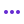

Notifications

item comment Notifications
Buyer review Notifications
Rating reminders Notifications
Meetups near you Notifications
Company news Notifications
New launches and projects
Monthly product changes
Subscribe to newsletter
Email me when someone follows me